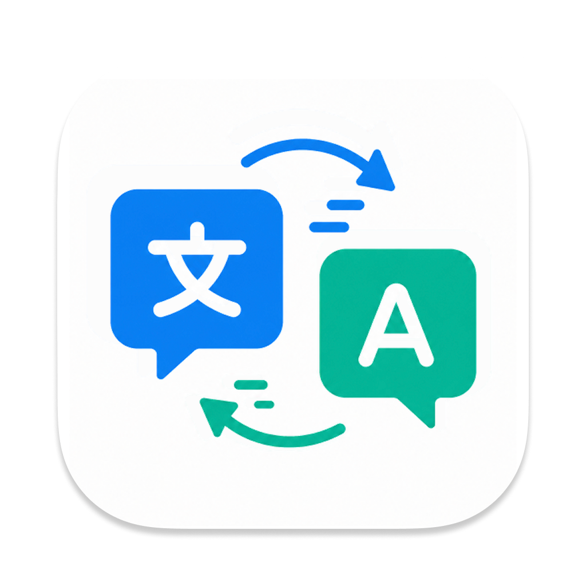
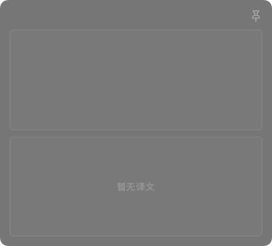

Daisy
Pinned Air · Overview
钉在屏幕上。
翻译随处到。
一个轻盈的原生窗口，安静留在手边。需要翻译时出现，不需要时不打断工作。

Daisy
Pinned Air · In Context
原文不动，
译文就到。
真实 Daisy 界面始终是唯一产品主角；环境文字只承担“正在阅读”的语境。
Daisy
Pinned Air · AI Choice
Apple 起步，
也能接入你的 AI。
服务名称只作为排版标签；最终视频中的选择器、菜单与字段全部换成运行中 Daisy 的真实捕获。
Apple 系统翻译
OpenAI-compatible
Ollama
DeepSeek
Google / 百度
Daisy